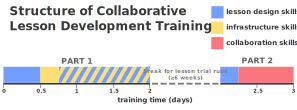
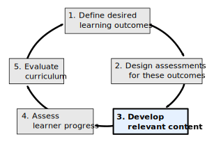

Image 1 of 1: ‘A graphical representation of the schedule and structure of collaborative lesson development training.’
Collaborative Lesson Development Training is taught
over three days (six half days), with an extended break between the
first two days (“part 1”) and the last day (“part 2”). The training in
part 1 focusses on good practices in lesson design and development, and
the concepts and skills needed to build a lesson website with The
Carpentries lesson infrastructure. Part 2 of the training begins with a
reflective discussion of lesson deisgn and iterative development, before
shifting focus to the skills required for effective collaboration on
open source projects.
Image 1 of 1: ‘A flow diagram presenting the Nicholls' five phases of curriculum design as a cycle.’
Nicholls’ five phases of curriculum design, presented
as a cycle to reflect that all aspects of the design should be revisited
in response to the results of the evaluation that takes place at step
5.
Figure 2
Image 1 of 1: ‘A flow diagram presenting the process of lesson design and development used in this training.’
An overview of the iterative process of lesson design
and development , adapted from Nicholl’s five phases, that will be
presented in this training.
Figure 3
Image 1 of 1: ‘Diagram of the life cycle of a lesson in The Carpentries ecosystem. A lesson is proposed at the beginning of the pre-alpha stage. It enters alpha when it is taught for the first time. In beta, it is taught by other instructors. A full release of the lesson is made when it is stable. Pilot workshops take place during the alpha and beta phases.’
Image 1 of 1: ‘An overview of the iterative process of lesson design and development, adapted from Nicholl's five phases, with step 1, 'Define desired learning outcomes' highlighted.’
In this episode we will begin the first step of our
iterative design process: defining the skills and knowledge we want
learners to leave with.
Figure 2
Image 1 of 1: ‘An example learning objective, "import data into an indexed DataFrame with read_csv", with emphasis placed on the action verb ("import") and the specificity ("indexed") of the objective.’
This diagram highlights the most important elements
of a learning objective.
Image 1 of 1: ‘Directory structure of a new lesson repository created from a lesson template’
Directory structure of new lesson repository created
from a lesson template. Note that new repositories created from the R
Markdown lesson template will include an additional renv/
directory.
Image 1 of 1: ‘An overview of the iterative process of lesson design and development, adapted from Nicholl's five phases, with step 2, 'Design assessments for these outcomes' highlighted.’
In the next two episodes, we will design assessments
to measure learners’ attainment of the objectives we defined
previously.
Figure 2
Image 1 of 1: ‘Four sets of words inside rectangles, with labeled arrows connecting them. "Ball" is at the left, and "Water", at right. "Big Ball" and "Small Ball" are stacked vertically between them. Arrows from "Ball" are labeled with "Heavy Ball" and "Light Ball", and arrows to "Water" are labeled as "Pushes out MORE" and "Pushes out "LESS. There is a red "X" over the arrows labeled "Pushes out MORE" and "Pushes out LESS"’
An example misconception from everyday life (borrowed
from The Carpentries Instructor Training) is, knowing that a bigger
object (more volume) pushes out more water out of a basin than a smaller
object (less volume), assuming that the similar principle will apply for
objects of different weights. Surprisingly, heavier objects of the same
volume as lighter ones will not push out more water.
Image 1 of 1: ‘An overview of the iterative process of lesson design and development, adapted from Nicholl's five phases, with step 3, 'Develop relevant content' highlighted.’
Now that we have designed assessments to measure
attainment of the objectives set for the lesson, it is time to begin
developing teaching content to give learners the knowledge and skills
they need to succeed in those assessments.
Image 1 of 1: ‘The life cycle of a lesson in The Carpentries ecosystem, annotated to indicate the platforms provided for lesson projects at each stage of the cycle. In the diagram includes the pre-alpha, alpha, beta, and stable stages described earlier, and icons showing that pre-alpha through beta development of lessons happens in The Carpentries Incubator, while The Carpentries Lab hosts peer-reviewed lessons and provides a platform for open peer review. Stable lessons may also be adopted into an official lesson program of The Carpentries.’
The life cycle of a lesson, annotated to indicate the
platforms provided for lesson projects at each stage of the cycle.
Image 1 of 1: ‘An overview of the iterative process of lesson design and development, adapted from Nicholl's five phases, with step 4, 'Assess learner progress' highlighted.’
In this episode, we will discuss how you can measure
learner progress and gather feedback about the effectiveness of your
content by teaching the lesson.
Image 1 of 1: ‘An overview of the iterative process of lesson design and development, adapted from Nicholl's five phases, with step 5, 'Evaluate curriculum' highlighted.’
In this episode, we will discuss the final step of
the iterative lesson design process: how you can use the notes,
information, and feedback you collected when trialling your lesson to
identify ways that the design and content could be improved.


![The life cycle of a lesson in The Carpentries ecosystem, annotated to indicate the platforms provided for lesson projects at each stage of the cycle. In the diagram includes the pre-alpha, alpha, beta, and stable stages described earlier, and icons showing that pre-alpha through beta development of lessons happens in The Carpentries Incubator, while The Carpentries Lab hosts peer-reviewed lessons and provides a platform for open peer review. Stable lessons may also be adopted into an official lesson program of The Carpentries.](fig/life_cycle_annotated.png)